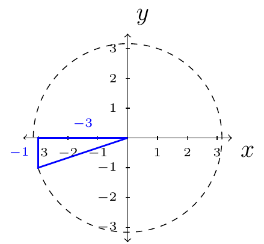

Section 5.1
In this section we recall the fundamental identities for trigonometric functions.
For, example \(\cos(-x)=\cos(x)\) and \(\sin(-x)=-\sin(x)\). Later, will we also need to remember:
Given \(x^2+y^2=r^2\) (a circle with radius \(r\)), we have,
We also have the reciprocal identities
The quotient identities
One of the most important identities that will be used through this chapter is
By dividing both sides by \(\cos^2(\theta)\) we then get
Or dividing both sides by \(\sin^2(\theta)\) we then get
As a consequence of those three identities we have
This may look like a lot to remember; however, only one identity must be memorized: \(\cos^2(\theta)+\sin^2(\theta)=1\). All of the other identities “spawn” from that identity. We call this identity, Pythagorean Identity.
Example 28
If \(\tan(\theta)=\frac{1}{3}\) and \(\theta\) is in quadrant three, then find \(\sin(\theta)\) and \(\cos(\theta)\).
Solution:
First, we will construct the triangle involving this situation:

The hypotenuse of this triangle is
We have \(x=-3\), \(y=-1\), and \(h=\sqrt{10}\). Therefore,
and
Example 29
Write \(\dfrac{1+\tan^{2}(\theta)}{1-\sec^{2}(\theta)}\) in terms of \(\sin(\theta)\) and \(\cos(\theta)\). Then simplify the expression so that there are no quotients by using the quotient identities or reciprocal identities.
Solution:
First, we will directly substitute cosine and sine into the original expression
Second, we will simplify
Finally, we will rewrite \(-\dfrac{1}{\sin^{2}(\theta)}\).